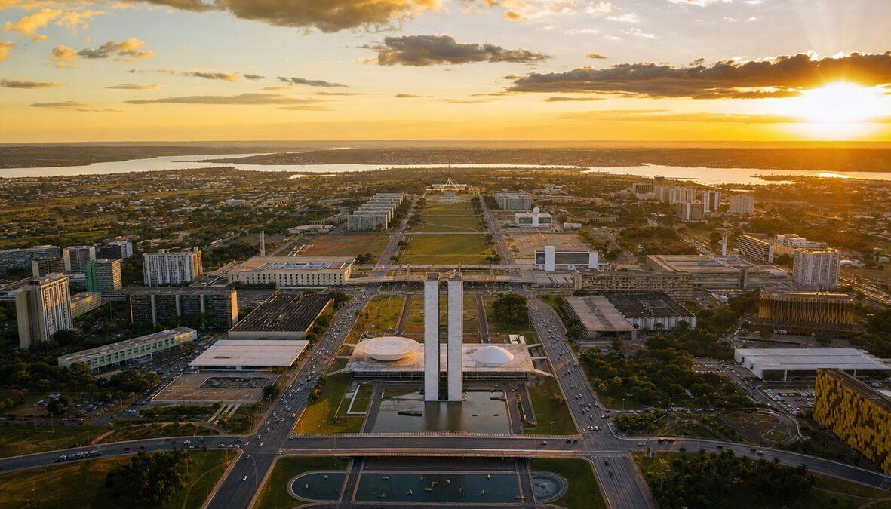
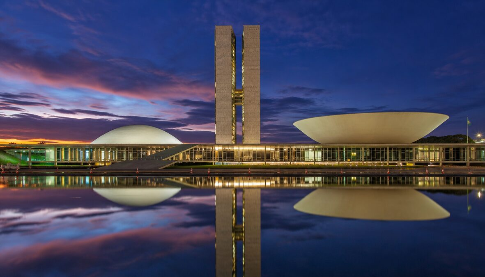
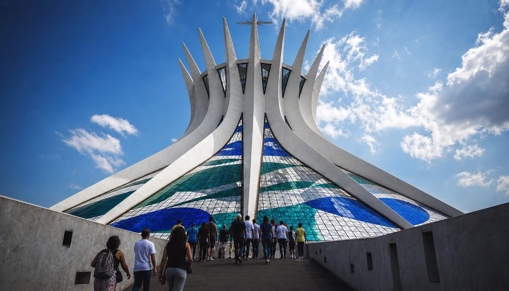
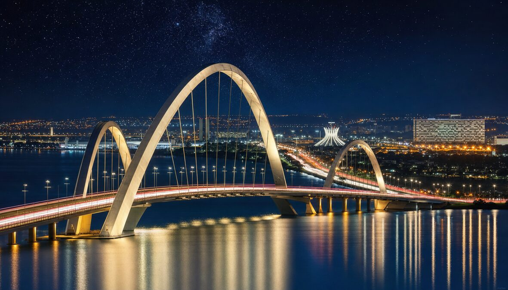
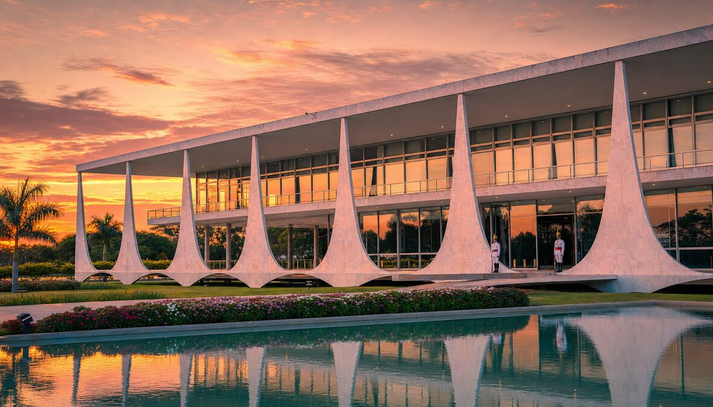
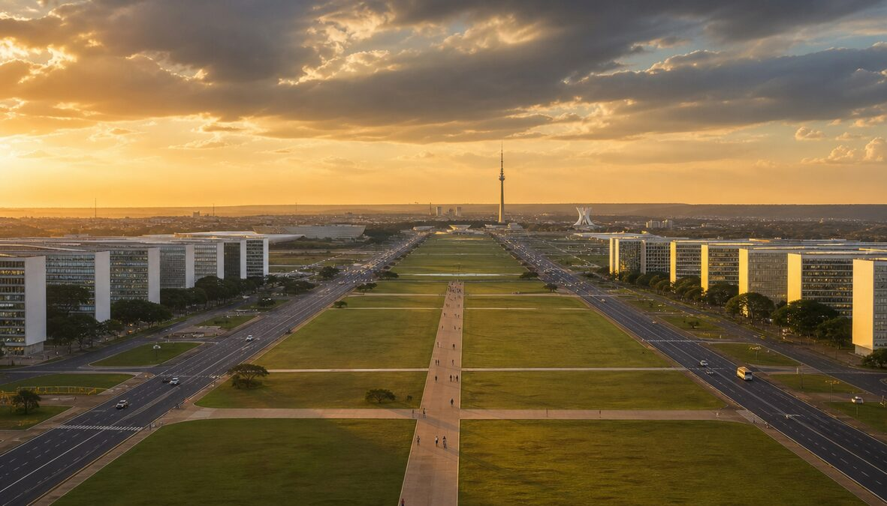

✈️ BRASÍLIA
THE CITY THAT WAS DRAWN BEFORE IT WAS BUILT
INAUGURATED 21 APRIL 1960 — 41 MONTHS FROM ZERO TO CAPITAL
Lucio Costa drew it. Oscar Niemeyer built it. Kubitschek willed it.
✈️ Visions of the Future

The Airplane — drawn on paper, built from cerrado

National Congress — dome, bowl, two towers

Cathedral — 16 hands reaching for God

JK Bridge — three arches over the lake

Palácio da Alvorada — Palace of the Dawn

Monumental Axis — 8 km of symmetry
"It is not the right angle that attracts me. Nor the straight line — hard, inflexible. What attracts me is the free, sensual curve."
— Oscar Niemeyer
✈️ The 9 Sectors of the Future
🏛️
NATIONAL CONGRESS
Twin 28-story towers. Dome = Senate. Bowl = Chamber. Designed in a single night.
"Two bowls and two towers. That's democracy."
⛪
THE CATHEDRAL
16 curved concrete columns, 40m high. You enter underground, emerge into light. 1970.
"You walk into the earth and come out facing heaven."
🌅
PALÁCIO DA ALVORADA
Palace of the Dawn. Arrow-shaped marble columns. Floats above its own reflection.
"The president's house hovers. On purpose."
✈️
PLANO PILOTO
The Pilot Plan. Shaped like an airplane — or a cross — or a butterfly. Costa won the competition with a sketch.
"He won a capital with a napkin drawing."
📐
MONUMENTAL AXIS
8 km boulevard. Ministry buildings in perfect rows. The spine of the airplane. Width: 250m.
"The widest road you'll ever walk alone."
🌊
LAKE PARANOÁ
Artificial lake, 40 km². Created with the city. JK Bridge: 3 asymmetric steel arches, 1,200m.
"They needed water. So they made a lake."
🎭
TEATRO NACIONAL
Pyramid-shaped theater. Acoustic perfection. Niemeyer: concrete is clay when you dream big enough.
"A pyramid that plays music."
🏗️
SUPERQUADRAS
Residential blocks. 6 floors max. Green space mandatory. Pilotis: buildings on stilts, ground is public.
"Nobody owns the ground floor. Everybody does."
🌿
CERRADO GARDENS
Burle Marx landscape. The cerrado is Earth's most biodiverse savanna. 12,000 plant species. Older than the Amazon.
"They didn't remove the garden. They built the city around it."
"Fifty years of progress in five."
— Juscelino Kubitschek, President of Brazil
✈️ The Visionaries
📐
LÚCIO COSTA
The Urbanist. Won the competition with a freehand sketch. Drew the airplane. Let Niemeyer fill it with wonder.
🏛️
OSCAR NIEMEYER
The Architect. 104 years old. 600+ projects. Curves over straight lines. Concrete that dances. Communism and beauty.
⚡
JUSCELINO KUBITSCHEK
The President. "50 years in 5." Moved the capital from Rio. 60,000 workers. 41 months. Done.
🌿
ROBERTO BURLE MARX
The Landscape Architect. Painted with plants. Made the cerrado a garden. Every park is a canvas.
🔧
JOAQUIM CARDOZO
The Structural Engineer. Made Niemeyer's impossible curves stand up. Poetry in reinforced concrete.
👷
THE CANDANGOS
60,000 workers from the Northeast. Built a capital in the wilderness. Many never left. The city is their monument.
✈️ Gifts to the World
📐
MODERNIST URBANISM
A capital designed from scratch — proof cities can be thought before they're built
🏛️
CONCRETE CURVES
Niemeyer proved concrete bends — architecture dances when architects dream
🌿
LANDSCAPE AS ART
Burle Marx turned gardens into paintings — nature arranged by a master
🏘️
SUPERQUADRAS
Residential blocks where ground floor belongs to everyone — social architecture
🛣️
THE PILOT PLAN
Urban zoning as philosophy — work, live, play, govern in perfect sectors
🌉
ENGINEERING POETRY
Cardozo turned math into art — impossible curves held up by invisible genius
🏗️
SPEED OF VISION
41 months from empty cerrado to national capital — will over terrain
🌎
UNESCO HERITAGE
First 20th-century city to receive World Heritage status — 1987
✈️ By the Numbers
104
NIEMEYER'S AGE AT DEATH
"Architecture is invention. I close my eyes and the shapes come."
— Oscar Niemeyer